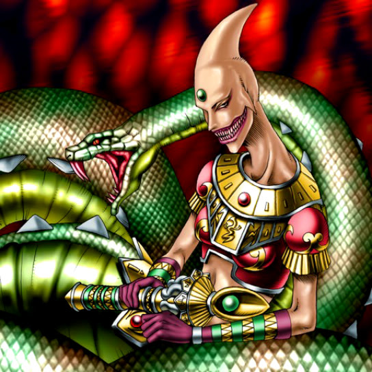

Serpentine Princess

Description: "Own REPTILE monsters strengthened by 900 points when this card is flipped face-up."
STATS
ATK: 1400
DEF: 2000DECK COST
Deck Cost per Card: 39EFFECT NOT IMPLEMENTED
Fusion List (4 Possible Fusions)
- Serpentine Princess + Mystical Sand = Bracchio-raidus
- Serpentine Princess + Prisman = Bracchio-raidus
- Serpentine Princess + Stone D. = Bracchio-raidus
- Serpentine Princess + The Statue of Easter Island = Bracchio-raidus